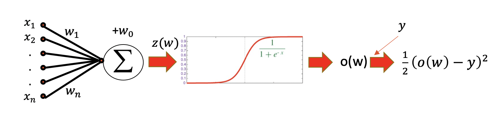

MLP¶
Deep Non-parametric Regression 。之前都是 function-assumed 出来的结果是closed-formed， 但是现在就是 Nonparametric regression 不在乎它是什么 the shape of the functional relationships is not predetermined ，就是用 deep learning 去 approximate 它。
- 为什么能 approximate？
- Non-linearity is introduced by activation functions.Any continuous functions defined on a compact set can be approximated arbitrarily well by a shallow neural network if the shallow neural network is arbitrarily wide. 如果浅神经网络是任意宽的，那么在紧集上定义的任何连续函数都可以被浅神经网络任意近似。(有理论证明)神经网络因为涉及到更深层就是2*3个参数，但是一般就是2+3个参数，所以神经网络会更强，在一些确实复杂的数据分布上。
architecture¶
Feedforward Neural Networks FNN 前向回馈 Layers in MLP are fully connected
Perceptron, 感知机¶
Perceptron , 感知机是接受多个输入后将每个值与各自的权重 相乘，最后输出总和 的模型
{kind=link}
Mathematical Definition¶
The architecture of an MLP is expressed as a composition of a series of functions
{kind=link}
Neural Network |
|
|---|---|
Input x |
at 0-th layer |
Output |
at L-th layer |
layers |
L |
hidden layer |
|
the depth of network |
L-1 (number of hidden layers. |
the width of network |
|
the size of network |
|
the i-th Layer |
|
linear transformation |
|
Input x |
|
weigth matrix |
:math:` W_iinlarge R^{d_itimes d_{i-1}}` |
bias vector |
|
activation function |
|
The width of the i-th layer |
Back Propagation¶
Loop over instances:
- The forward steps
Given the input, make predictions layer-by-layer, starting from the first layer)
- The backward steps
- Calculate the error in the outputUpdate the weights layer-by-layer, starting from the final layer
The neuron is modelled by a unit connected by weighted links to other units 𝑖. Suppose
Now we have a sample (x,y) with .
{kind=link}
in classification problem¶
难点：
分类是label类型，输出的是label， 而 output of NN is a continuous value
怎么应用 multi-classification， how to represent Y Matrix
How to represent Y and
从一维的1，2，3，4，…，到二维的 0-1 bool 矩阵
- Example
#category = 2:
#category = 4:
一般最后输出层，神经元的数量就刚好是 category 的数量，并且是每一个神经元 model class probabilities. SO
h = Sigmoid
g = Softmax